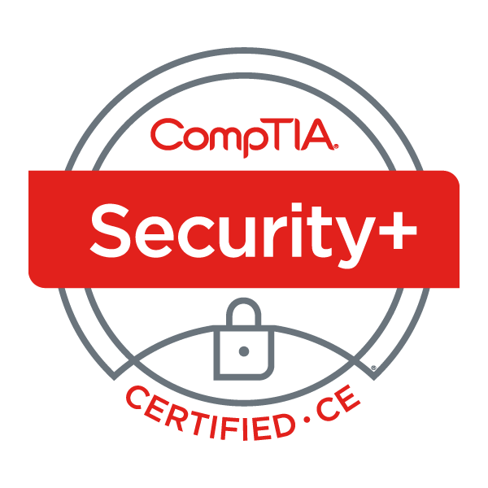
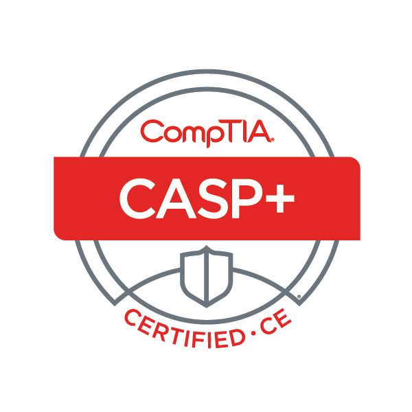
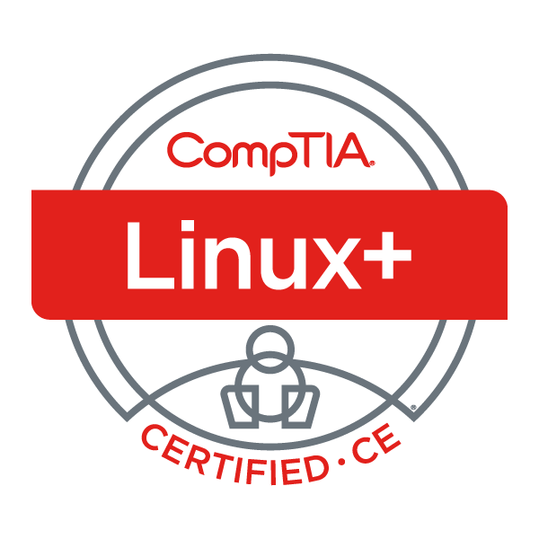
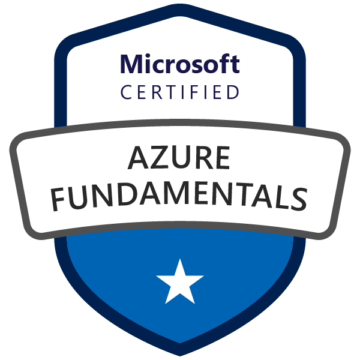

Welcome to HCSE
Welcome to Horton Cyber-Systems Engineering - Guarding Tomorrow, Today. Whether you're an established enterprise or a growing small business, navigating the digital landscape is paramount. With over 12 years of experience in cybersecurity, systems administration, and network support, our skilled team is here to empower your business. [Rest of the intro text...]
Mission and Vision
Bringing simplicity to complex systems and security.
Experience
Highlight your 12 years of experience in government contracting and cybersecurity. Share your expertise in RMF, STIGs, SCAP, ACAS, and SIEM tools, especially Splunk.
Contact Us
Certifications
- 
- 
- 

- 